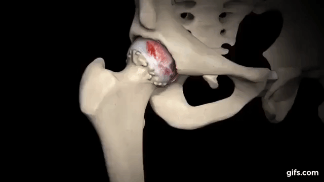

¿QUE ES LA BIOIMPRESION Y CUAL ES LA CAUSA DE SU ORIGEN ?
bioimpresión se ha convertido en uno de los principales y más atractivos campos de investigación dentro de la impresión 3D.
La impresión 3D hace referencia a todas aquellas tecnologías que utilizan un proceso de unión de materiales, generalmente mediante
el proceso capa tras capa, con la finalidad de hacer objetos a partir de datos descritos en un modelo 3D digital.
La impresión de órganos en 3D está aún en fase de investigación y desarrollo, pero ya se han logrado importantes resultados en
el ámbito del laboratorio que pronostican un futuro muy esperanzador.
Además, también se utiliza cada vez más en sectores como la ingeniería, la arquitectura, el arte, la moda o la investigación espacial.
